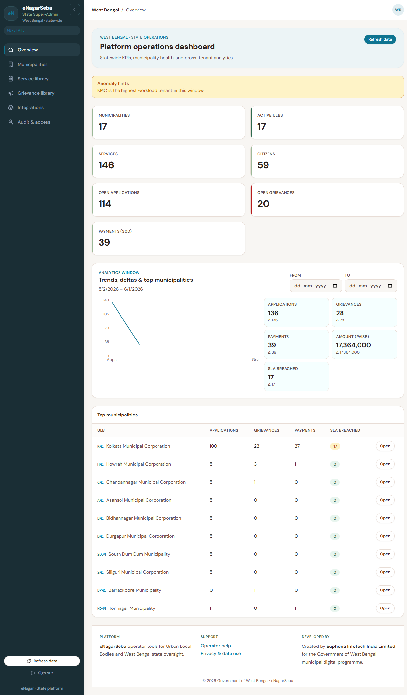
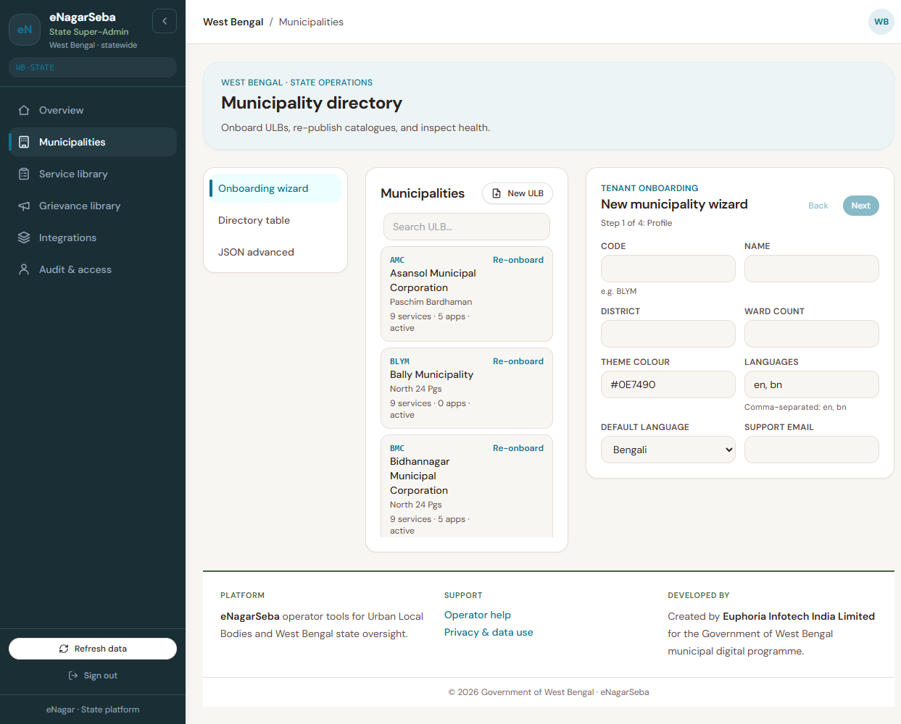

State Operator Manual
Nothing matched. Try one word — ULB, publish, or audit.
Welcome
This manual is for state programme operators who work on the computer to support many municipalities at once. You do not need to be a programmer. You need to know government processes: onboarding a ULB, publishing a standard service, and checking audit logs.
The screen uses a teal blue colour theme. ULB screens use green/coral — that is intentional so you do not open the wrong portal.
Sign in & menu
- Open the State Admin address given by your IT team.
- Sign in with your state operator username and password.
- Use the left menu to change section. On a large monitor, the top bar also has search (Ctrl+K) to find a ULB code or service name quickly.
| Menu | Your main jobs here |
|---|---|
| Overview | See statewide numbers and charts |
| Municipalities | Add or update a ULB (municipality) |
| Service library | Create standard services all ULBs can adopt |
| Grievance library | Standard complaint types |
| Integrations | Status of payment gateway, DigiLocker, etc. |
| Audit & access | Support login for a ULB (with record) and audit log |
Overview

Summary cards
Quick statewide picture: how many municipalities are active, how many services exist, open applications and grievances, payments in the last 30 days, and overdue cases.
Charts and warnings
Choose a date range with the calendar boxes (not typed dates). Yellow banners warn if one ULB looks unusual — investigate in Municipalities.
Top municipalities table
Sort columns to see who is busiest or who has most overdue work. Open the detail drawer for one ULB’s contact settings and counts.
Municipalities (ULBs)
A municipality (ULB) is one town/city body on the platform — for example Kolkata, Siliguri. Here you create or update them.

Three ways to work on this page
- Onboarding wizard — guided form (best for new ULBs).
- Directory table — search list of all ULBs.
- JSON advanced — for IT bulk import only.
Field guide — onboarding wizard
| Field | What to enter |
|---|---|
| ULB code | Short uppercase code (example: ABC). Cannot change easily later — agree with ULB first. |
| Name | Full municipality name citizens recognise. |
| District | District name for reports. |
| Ward count | Number of wards (optional). |
| Theme colour | Colour on citizen app — hex code from branding guide. |
| Languages | Usually English and Bangla; add Hindi if needed. |
| Default language | Language citizens see first (often Bangla). |
| Status | Active = live. Inactive blocks citizens. |
| Inherit default services | Tick yes to auto-add recommended state services. |
| Service categories | Tick groups (certificates, licences, …) this ULB will offer. |
| Grievance categories | Tick complaint types (water, roads, …). |
| Support email | ULB helpline email shown to citizens. |
| First ULB administrator | Username, email, name, temporary password — hand to ULB securely; they must change password. |
Update an existing ULB
Select the ULB in the list, change fields in the wizard, and save. Use detail drawer to check service count and activity without saving.
Service library
Here you maintain standard services (birth certificate, trade licence, etc.) that municipalities can copy. A service must be published before ULBs can use it.
List on the left — what badges mean
| Badge | Meaning |
|---|---|
| Draft | Still being prepared — ULBs should not use yet |
| Published | Live — ULBs can adopt |
| Deprecated | Old — no new adoptions; ULBs migrate away |
Curator form (right side)
| Field | What to enter |
|---|---|
| Service code | Short id without spaces (birth-certificate) |
| Category | Group on citizen home (certificate, licence, …) |
| Name & description | Clear English; ULB may translate locally |
| Default SLA days | Recommended days to finish (ULB can change) |
| Fee type & amount | Typical state fee — ULB may override |
| Curator notes | Internal notes for your team only |
Build the citizen form (state level)
- Select a service in the list.
- Click the link to open form builder (separate page).
- Add questions the same way ULBs do — sections, text, dates, file uploads.
- Save and return to the library. When the form is complete, set status to Publish.
ULBs that adopt this service can click Load State template to copy your form, then adjust locally.
Publish or retire a service
- Finish the form — list should show form is usable (not zero questions).
- Click Publish on the curator panel.
- To retire, use Deprecate and inform ULBs by official letter.
Importing a form from Excel, Word, or PDF
When building a state standard template, you can upload an existing form file instead of entering every field manually. Import updates the draft only — you must still review and publish from the service library.
Supported sources
Same as ULB Admin: Excel column template (best), Excel grid layout (review carefully), Word table, PDF with form fields or typed text. Handwritten scans are rejected.
Recommended workflow for curators
- Prepare a column-template Excel if possible (see IT runbook).
- Upload and wait for Completed status.
- Review proposals; Apply to draft when confidence is acceptable.
- Complete Bangla/Hindi labels and validation in the form builder.
- Return to Service library and Publish when ULBs may adopt.
ULBs that adopt your service use Load State template — a clean import here saves every municipality rework.
Grievance library
Standard complaint types citizens can file (water, sanitation, street light, etc.).
Category
- Code — short id (broken-streetlight).
- Names — English, Bangla, Hindi labels.
- Icon — picture on citizen app (IT can help pick name).
- Docket code — letters at start of complaint number.
- Sort order — display position (lower = higher on list).
- Active — untick to hide from citizens.
Subtypes
Under one category, add subtypes (example: under Water — “no water” and “low pressure”). Officers route work more easily.
Integrations
This page is a status board for external systems — not where you type passwords.
| Status light | Meaning |
|---|---|
| Ready | Working in this environment |
| Partial | Some functions work — read notes |
| Blocked | Not working — follow up with vendor / IT |
Fill owner (which team fixes it) and notes (MoU pending, UAT, etc.). Click Check to refresh last test time.
Audit & access
Support login (impersonation)
- Enter ULB code (same code as onboarding).
- Enter reason — ticket number or “commissioner letter dated …”.
- Read the yellow warning, then click Create 15-minute token.
- Follow IT instructions to use the token — do not email it to the ULB.
Coverage summary
Shows whether important actions (publish service, onboard ULB, etc.) are being logged. Red “Missing” needs IT fix before audit season.
Audit log
Filter by person, action, or ULB. Use Export CSV for records. Load more shows older entries.
Words we use
- ULB
- Urban local body — one municipality on the platform.
- Adoption
- When a ULB switches on a state service template for its citizens.
- Publish
- Make a draft service live for ULBs to adopt.
- Deprecate
- Retire a service — no new ULB uptake.
- Curator
- State officer who maintains the service library.
- Token (15-minute)
- Temporary support access to help a ULB — fully logged.
Common problems
| Problem | What to do |
|---|---|
| Cannot publish service | Form may be empty — open form builder and add at least one question. |
| ULB has no services after onboard | Check you ticked service categories and templates are Published. |
| Search finds nothing | Check internet; tell IT if statewide search is down. |
| Impersonation failed | ULB code wrong or inactive; reason box empty; you may lack rights. |
| Integration stays Partial | Update notes; press Check; escalate to vendor — passwords are not stored here. |